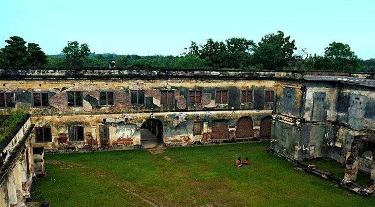

TENTANG
KABUPATEN
NGAWI
adalah sebuah kabupaten di Provinsi Jawa Timur, Indonesia.
Ibu kotanya adalah Kecamatan Ngawi.
Kata Ngawi berasal dari kata awi, bahasa Sanskerta yang berarti bambu
dari awi atau bambu tersebut selanjutnya mendapat tambahan huruf sengau ng menjadi
NGAWI
Makanan Khas
NGAWI
Tahu Tepo
Tepo Tahu adalah makanan tradisional yang terdiri dari bahan dasar tepo, tahu dan aneka bahan tambahan lainnya. Makanan ini sekilas terlihat hampir mirip dengan lontong tahu atau kupat tahu, namun memiliki penyajian dan rasa yang sangat khas. Tahu tepo ini merupakan salah satu makanan tradisional dari Ngawi, Jawa Timur.
Cemue
Wedang cemue bisa jadi adalah satu-satunya wedang yang berani memadukan unsur gurihnya santan, dipadukan dengan manisnya gula tebu, pedas jahe, gurih dan legitnya roti tawar, serta krenyes krenyesnya kacang klici dan tak lupa dalam minuman ini terdapat pula taburan/toping bawang merah goreng dan aroma aroma wangi daun pandan.
Inilah keunikan minuman khas Ngawi ini. Rasa Jahe, Rasa Kacang, dan Taburan Bawang Goreng yang sepertinya tidak lazim untuk sebuah minuman. Wedang cemue paling pas disajikan pada saat malam hari untuk menghangatkan tubuh disaat udara dingin malam datang. Apalagi minumnya ditemani dengan gorengan hangat yang akan semakin menambah kehangatan. Wedang cemue sekarang ini tidak hanya bisa ditemui di Ngawi saja, tetapi beberapa daerah lain di Jawa Timur sebelah barat seperti Magetan. Jadi yang kebetulan sedang jalan-jalan ke daerah tersebut, jangan sampai terlewatkan untuk mencicipi minuman yang sangat unik ini.
Kripik Tempe
Biasanya tempe diolah untuk dijadikan lauk pada makanan. Tapi ada juga beberapa orang yang menjadikannya sebagai keripik. Camilan ini banyak dijumpai di beberapa kota yang ada di Jawa Timur. Sejak dahulu Kripik Tempe ini sendiri memang merupakan salah satu makanan khas dari Kota Ngawi. Di Kabupaten Ngawi pembuat keripik tempe dapat dijumpai di Desa Sadang, Prandon.
Budaya Khas
NGAWI
Keduk Beji
Keduk Beji merupakan salah satu upacara adat yang ada di Desa Tawun, Kecamatan Kasreman, Kabupaten Ngawi, Jawa Timur. Oleh warga desa tersebut, tradisi ini dilakukan baru-baru ini di Taman Wisata Tawun.
Upacara adat ini biasanya digelar setiap hari Selasa Kliwon berdasarkan perhitungan tanggal Jawa Islam.
Menurut Mbah Wo Supomo, inti dari upacara Keduk Beji adalah penyilepan dan penggantian kendi yang disimpan di pusat sumber air Beji. Pria yang akrab disapa Mbah Pomo ini juga mengatakan bahwa pusat sumber tersebut ada di dalam gua.
Upacara Kebo Ketan
Upacara kebo ketan adalah bagian dari perayaan Maulud Nabi Muhammad SAW. Perayaan ini diekspresikan di dalam budaya Jawa kontemporer, dan diselenggarakan oleh warga desa Sekaralas dan Sekarputih didampingi LSM Kraton Ngiyom. Narasi yang dikembangkan dimulai dengan kisah Kodok Ibnu Sukodok kawin dengan Peri Setyowati, seorang dhanyang yang menjaga kawasan hutan dan mata-air di hutan Begal, yakni Sendang Marga dan Sendang Ngiyom. Sebagai roh tanpa badan, Setyowati meminta Kodok membantunya menanami kembali hutan yang dahulu berisi pohon-pohon tua namun ludes disaat penjarahan hutan di tahun ’98. Misi dan pamrih perkawinan Kodok dan Setyowati bukan sex, bukan harta, bukan pula mendukung kemusyrikan, sebaliknya dan melainkan, narasi mitos yang diciptakan, berpamrih penyelamatan budaya dan ekologi di Jawa khususnya di hutan Begal, Ngawi, melalui seni dan budaya yang menguatkan kohesi sosial, yakni seni upacara. Narasi yang dibangun tidak menempatkan Setyowati sebagai tempat meminta apapun. Sebaliknya, diskusi setara dan semisi, dilakukan dengan Setyowati untuk menyatukan siasat merawat alam dan kebudayaan.
Tari Orek Orek
Orek-orek adalah kesenian tradisional berupa tarian pergaulan yang merupakan perpaduan antara gerak tari dan nyanyian yang diiringi tetabuhan yang cara memukulnya salah satunya dengan dikorek. Mengikuti pola/ bentuk teater/ tontonan yang diselingi gerak, tari, nyanyi dan kemudian pesan dapat disampaikan melalui tembang. Pemain putera dan puteri antara 4 atau lebih orang penari sekaligus pemain/ pendukung cerita ( dengan menyesuaikan panggung yang tersedia, dan ini belum termasuk pengiring/ pengrawit ). Gamelan yang dipakai laras slendro, tetapi tidak selengkap gamelan slendro yang ada. Gamelan tersebut biasanya disebut gamelan thuk brul ( bhs. Jawa gathuk gabrul ).
Wisata di
NGAWI



Tawun
Tawun adalah sebuah desa di wilayah Kecamatan Kasreman, Kabupaten Ngawi, Provinsi Jawa Timur. Di desa ini terdapat Taman Wisata Tawun yang terkenal karena sendang (kolam) bulusnya. Selain kolam bulus di sini juga ada kolam renang baik untuk dewasa maupun anak anak.
Kebun Teh Jamus
Kabupaten Ngawi menyimpan kekayaan potensi alamnya yang luar biasa. Bentang alam dengan kontur lahan perbukitan hijau menjadi salah satu daya tarik destinasi wisata Ngawi yang mulai dilirik banyak wisatawan lokal maupun dari luar daerah salah satunya adalah objek Agrowisata Kebun Teh Jamus yang terletak di Desa Girikerto, Kecamatan Sine, Kabupaten Ngawi, Jawa Timur.
Lokasi Agrowisata Kebun Teh Jamus ini sebenarnya letaknya lebih dekat dari Seragen yang jaraknya sekitar 40 km arah ke Timur. sedangkan bila dari Kota Ngawi untuk menuju ke lokasi objek agrowisata Teh jamus ini arahnya ke Barat yang berjarak 45 km.
Srambang Park
Srambang Park ini berada di kawasan Hutan Jogorogo, tepatnya berlokasi di Desa Girimulyo, Kecamatan Jogorogo, Ngawi. Lokasinya di sekitaran kaki gunung Lawu. Jika ditempuh dari pusat kota bisa memakan waktu 40 menit perjalanan ataupun memiliki jarak sekitar 20 kilometer. Aksesnya sendiri sudah cukup baik, jadi kamu tidak perlu khawatir kesulitan. Dulu, Srambang Park ini hanya menyuguhkan destinasi wisata berupa air terjun dan keindahan alamnya yang sangat asri. Sekarang sudah disulap sedemikian rupa sehingga menarik lebih banyak lagi pengunjung saat musim liburan datang. Banyak spot-spot selfie kekinian yang bisa untuk disinggahi kala kamu datang ke sini.
Benteng Van Den Bosch/Benteng Pendem
Benteng Van den Bosch, lebih dikenal sebagai Benteng Pendem adalah sebuah benteng yang terletak di Kelurahan Pelem, Kecamatan Ngawi, Kabupaten Ngawi. Benteng ini memiliki ukuran bangunan 165 m x 80 m dengan luas tanah 15 Ha. Lokasinya mudah dijangkau yakni dari Kantor Pemerintah Kabupaten Ngawi +/- 1 Km arah timur laut. Letak benteng ini sangat strategis karena berada di sudut pertemuan sungai Bengawan Solo dan Sungai Madiun. Benteng ini dulu sengaja dibuat lebih rendah dari tanah sekitar yang dikelilingi oleh tanah tinggi sehingga terlihat dari luar terpendam.
Alas Ketonggo Srigati
Wilayah Kabupaten Ngawi sebenarnya kaya akan potensi tempat wisata yang bisa diperdayakan. Satu di antaranya adalah Alas Ketonggo. Tempat ini adalah hutan dengan luas 4.846 meter persegi, yang terletak 12 KM arah selatan dari Kota Ngawi, Jawa Timur. Menurut masyarakat Jawa, Alas Ketonggo ini merupakan salah satu dari alas angker atau wingit di tanah Jawa. Kepercayaanya, di tempat ini terdapat kerajaan makhluk halus. Sedangkan satu hutan lainnya yang juga dianggap angker adalah Alas Purwa yang terletak di Banyuwangi, Jawa Timur. Alas Purwa disebut sebagai Bapak, sedangkan Alas Ketonggo disebut sebagai Ibu. Kawasan Alas Ketonggo mempunyai tempat pertapaan, di antaranya Palenggahan Agung Srigati.
Monumen Soerjo
Monumen Suryo, sebuah lokasi wisata di Kabupaten Ngawi, Jawa Timur, menjadi salah satu tempat wisata terfavorit bagi masyarakat lokal. Meskipun hanya monumen saja, bangunan monumen ini penuh dengan sejarah yang tidak mungkin akan dilupakan dengan mudah khususnya oleh masyarakat Ngawi. Monumen Suryo ini dibangun sebagai tanda hormat masyarakat Kabupaten Ngawi pada khususnya dan masyarakat Jawa Timur pada umumnya pada seorang tokoh Gubernur pertama Jawa Timur, RM. Soerjo meninggal akibat adanya insiden PKI pada tahun 1948. Gubernur Pertama Jawa Timur ini menjadi salah satu target penculikan oknum PKI dan dibunuh dengan sadis di tengah Hutan Kedungalar, Ngawi. Monumen Suryo diresmikan pada 28 Oktober 1975 oleh Pangdam VIII/Brawijaya, Mayjen TNI Witarmin.
Mesuem Trinil
Museum Trinil, Kedunggalar, Ngawi, Jawa Timur, Indonesia. Museum Trinil atau Kepurbakalaan Trinil terletak di Dukuh Pilang, desa Kawu, Kecamatan Kedunggalar, Kabupaten Ngawi. Berjarak 14 km dari Kota Ngawi ke arah Barat Daya, pada km 10 jalan Raya Ngawi, Solo. Ada pertigaan belok ke arah Utara. Sepanjang 3 km perjalanan baru sampai pada museum Trinil. Letaknya sendiri di pinggiran kali Bengawan Solo, dan layaknya situs-situs kepurbakalaan yang ada di tanah air memang cenderung di pinggiran sungai. Seperti halnya situs Sangiran atau situs Sambung Macan Sragen juga di Bantaran Sungai Bengawan Solo.
Di sebelah Barat Daya di halaman museum terdapat bangunan berupa monumen yang didirikan oleh Eugene Dubois yang pertama kali menemukan situs ini. Di monumen itu dituliskan angka tahun pertama kali penemuan fosil manusia purba yang diberi nama Pithethropus Erectus di samping manusia purba di dalam museum sendiri juga banyak ditemukan berbagai macam fosil binatang purba, yang paling terkenal adalah ditemukan gading gajah purba yang sangat besar jika dibandingkan dengan ukuran gading gajah biasa. Manusia purba ini diperkirakan berada pada zaman pleistosin tengah atau satu juta tahun yang lalu.